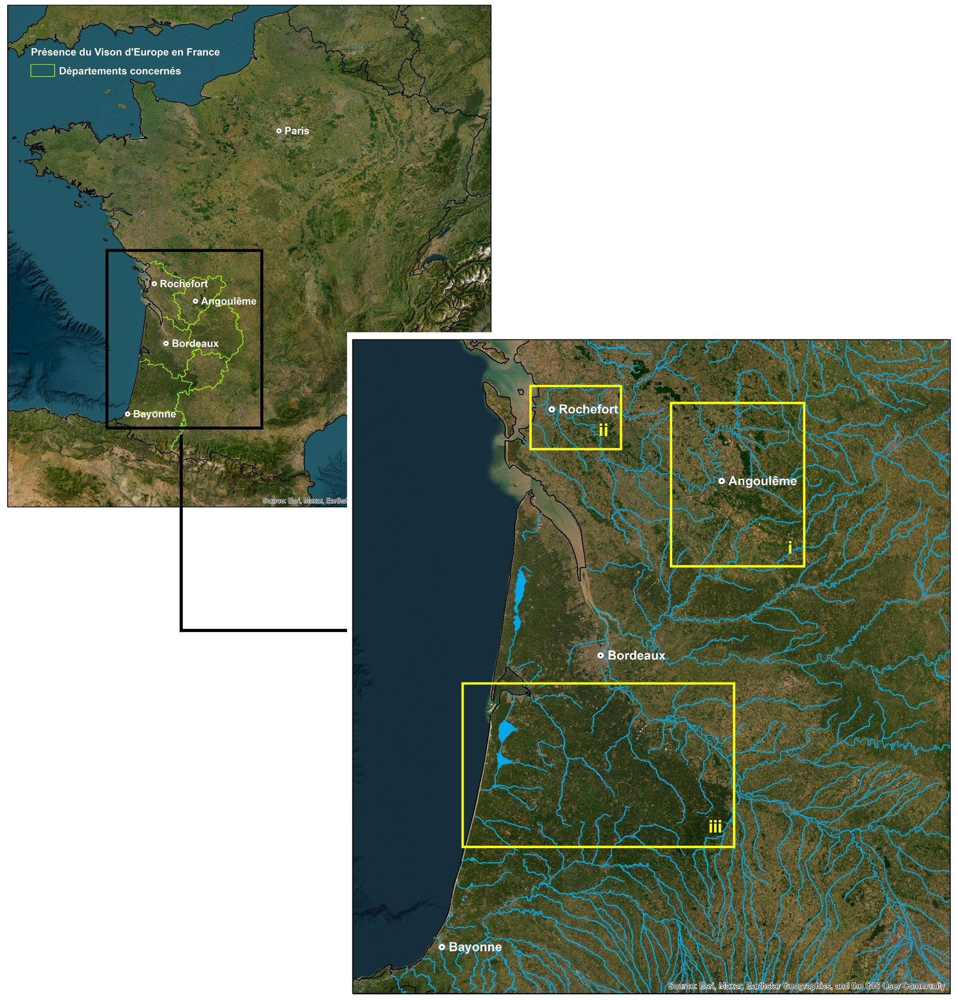

3 Etude
3.1 Site d’étude
Les données proviennent de trois aires d’études différentes : 1. la vallée de la Charente en amont et en aval d’Angoulême dans le département de Charente (16), à partir du suivi réalisé dans le cadre du LIFE VISON entre 2020 et 2022 ; 1. les marais littoraux de Rochefort dans le département de Charente-Maritime (17) à partir du suivi réalisé dans le cadre du LIFE VISON entre 2020 et 2022 ; 1. les rivières des Landes de Gascogne à partir d’individus suivis entre 1996 et 2000.

3.2 Radiopistage
Les individus ont été capturés par cages-pièges non vulnérantes lors de sessions de capture impliquant dix nuitées consécutives de piégeage à l’exception d’un individu qui a été capturé de façon accidentelle dans une cage à Ragondins. Les individus capturés ont été équipés d’un transpondeur sous-cutané permettant une identification pérenne. Un sexage, un prélèvement de poils et une pesée ont également été faits au même moment. Les sessions de capture ont été réalisées en dehors de la période de mise-bas et d’élevage des jeunes, soit de début septembre à fin mars.
Les individus capturés ont fait l’objet d’une intervention chirurgicale pour être équipés d’un implant intraabdominal émetteur VHF (TELONICS ©) s’ils correspondaient à certains critères morphologiques confirmant leur bon état de santé (poids minimum de 520 grammes (g) pour les femelles et 875g pour les mâles en début d’année ou 500g pour les femelles et 800g pour les mâles à l’automne). Un vétérinaire a réalisé l’intervention pour placer l’émetteur VHF dans la cavité péritonéale des individus, alors sous anesthésie générale. Les individus ont également reçu une injection d’anti-douleur, d’anti-inflammatoire et d’antibiotique longue action préventif (Fournier-Chambrillon et al., 2003). Ils ont été relâchés environ 24 heures après la capture. Il est important de préciser que les deux projets sur lesquels s’appuie la thèse ont fait l’objet d’autorisations de captures et manipulations du Vison d’Europe (autorisations n°96/363, 96/364, et 98/488 à 98/500 délivrées par le Ministère en charge de l’Environnement dans le cadre du suivi dans les Landes de Gascogne et arrêté portant dérogation à la protection stricte des espèces du Ministère de la Transition Ecologique et Solidaire daté du 19 avril 2018 pour le projet LIFE VISON) ainsi que dans le cadre du LIFE VISON, conformément à la réglementation en place depuis 2013, une autorisation de projet numéro APAFIS#15599-2018062011206645 v2.
Les individus ont ensuite été suivis par radiopistage sur le principe de la télémétrie (Janeau, 1994). Le signal sonore de l’émetteur est capté par un récepteur WildLife Materials TRX 2000. Le radiopistage a été organisé en deux parties. La première consiste à rechercher le signal en véhicule équipé d’un mât télescopique (EUROMAST) muni à sa base d’un pointeau permettant d’orienter sa position par rapport à un rapporteur circulaire (de 0 à 360°). Le récepteur est, dans cette première approche, relié à une antenne directionnelle Yagi cinq ou sept brins fixée au mât. Lorsque le signal est perçu, la position de l’animal est estimée sur la base d’une triangulation. Une fois cette triangulation effectuée, la seconde partie consiste en une approche pédestre avec un récepteur relié à une antenne à main Yagi deux ou trois brins (TELONICS). Le but de cette approche pédestre est d’identifier la localisation précise de l’individu correspondant à l’identification du gîte diurne.
3.3 Données acquises
Les données collectées sont donc des localisations quotidiennes précises des individus, en journée, qui correspondent le plus souvent à des gîtes diurnes. Tous les gîtes diurnes identifiés par approche pédestre ont été décrits selon plusieurs paramètres environnementaux comme la typologie de gîtes (au sol, dans une cavité, dans un tronc…), la distance à l’eau et le type d’eau proche (cours d’eau, plan d’eau, inondation), le type de lit mineur le plus proche (fossé, bras courant, bras mort) ou encore le recouvrement de différentes strates végétales environnantes. En tout chaque gîte est décrit par sept variables.
Toutefois, l’approche pédestre était parfois impossible (individu sur une île…) et la localisation quotidienne associée est définie uniquement à partir de la triangulation faite en voiture. Enfin, lorsque l’intensité du signal sonore était fortement irrégulière, les animaux ont été considérés comme étant en activité, la localisation étant définie de la même manière que pour les gîtes pour lesquels il n’y a pas eu d’approche pédestre.
En outre, pour le radiopistage réalisé dans les Landes de Gascogne, des suivis continus des individus lors des phases d’activité ont été réalisés à l’aide de deux véhicules positionnant l’animal en simultané toutes les 10 minutes par triangulation. Ces suivis permettront de qualifier les surfaces et habitats exploités lors des activités de chasse et d’appliquer des approches méthodologiques liées à l’étude des trajectoires individuelles.
Dans les Landes de Gascogne, neuf individus ont été suivis, dont deux sur deux périodes différentes. En ce qui concerne le LIFE VISON, quatre individus ont été suivis par radiopistage dans les marais de Rochefort et quatre dans la vallée de la Charente. Trois de ces individus ont d’ailleurs été suivis sur deux périodes différentes (Tableau 1). Un dernier individu capturé accidentellement dans une cage à Ragondins en Charente sur un sous-affluent de la Dordogne a également été suivi dans le cadre du LIFE VISON.
3.4 Collecte de crottes et régime alimentaire
La découverte fortuite de crottes de Vison d’Europe dans le milieu naturel est quasiment impossible. C’est pourquoi, leur collecte a été organisée à partir de la recherche autour des gîtes des visons suivis par radiopistage. Ainsi, après que l’individu a quitté son gîte et dans les jours suivants la localisation précise d’un gîte diurne par radiopistage, des crottes ont été cherchées dans un rayon de moins de 5 mètres autour des gîtes identifiés. Au total sur les deux projets, ce sont 1347 échantillons qui ont été récoltés (Tableau 1). Etant donné le grand nombre de crottes collectées et la difficulté de recherche dans le milieu naturel, il n’est pas envisagé de récolter de nouveaux échantillons dans ce projet de thèse.
Lors du suivi dans les Landes de Gascogne, 1011 crottes ont été prélevées. La composition des crottes a été évaluée par identification macroscopique et microscopique des résidus contenus (poils, ossements…).
Pour définir la composition du régime alimentaire dans le cadre du LIFE VISON, les 336 crottes collectées ont été analysées en partenariat avec le laboratoire GeCoLab de l’Université de Liège selon une méthode de « metabarcoding ». Cette méthode repose sur l’amplification et le séquençage à haut débit de type Nextseq de courts fragments très variables du gène cytochrome oxydase 1 (CO1) contenu dans les échantillons mis à l’analyse. Les fragments d’ADN séquencés pour chaque échantillon sont ensuite comparés par une approche de type « blast » aux bases de données publiques disponibles, notamment les bases de données GENBANK et BOLD (Barcoding of Life), et à la base de données privée GeCoLab pour les Mammifères. Ainsi, le Vison d’Europe est confirmé comme espèce hôte et son régime alimentaire est révélé en identifiant toutes les proies de vertébrés et d’invertébrés contenues dans ses fèces.
Afin d’obtenir des données de disponibilité en proies, il est envisagé de faire des inventaires des différents types de proies sur les zones où ont été suivis les différents individus. Dans tous les cas, une recherche bibliographique devrait permettre de donner des premières indications quant à la présence de chaque proie au sein des zones d’études.